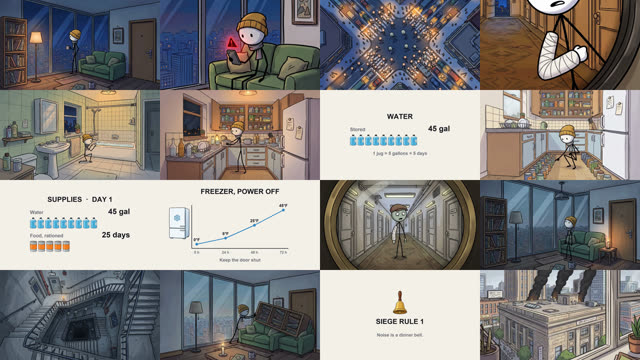
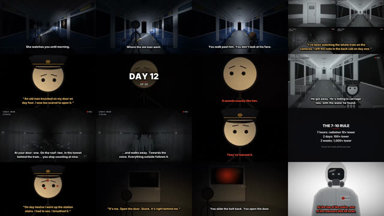

Todos usan la fórmula de los dos videos: cuerpo de palitos, cabeza blanca redonda y un solo accesorio de color que lo hace reconocible. El fondo carga el detalle y el personaje casi no se anima. Cada viñeta grande alterna sola sus 3 expresiones.
Lo que hacen tus referencias
Formato de serie: «30 días atrapado en…», con un contador de días y un panel de recursos (agua, comida, batería) que va bajando.
Narración en segunda persona y frases cortas: «Tú no te mueves.» Un subtítulo grande por plano.
Personaje mínimo, fondo rico: el del gorro mostaza casi no se mueve. Lo que cambia es la escena y la luz.
Tarjetas de datos reales («Regla 7-10», «el congelador sin luz»): el espectador siente que aprende algo y comparte.
Tensión con pocos recursos: mirilla de la puerta, cámaras de seguridad, una voz conocida que no es quien parece y un giro al final.

Instagram: 30 días en el piso 30 (2:46)

YouTube: el último vagón (11:53)
Te gustó versiones nuevas de las 2 que elegisteTop mis favoritos para este formato
Mi recomendación
Top 3 para este formato
Faro (linterna frontal). Es el único cuyo accesorio ilumina la escena. En lugares oscuros, como el metro, el haz de luz es su firma: lo reconoces aunque solo veas la luz.
Remi (curita). Cada serie termina con una curita nueva que se queda para siempre. La cara va contando su historial y la gente cuenta las curitas en los comentarios.
Mochi (mochila gigante). La mochila es el inventario de cada historia. Encaja directo con las tarjetas de recursos y con la pregunta «¿qué llevarías tú?».
También puedes combinar opciones: por ejemplo, Faro con la curita de Remi.